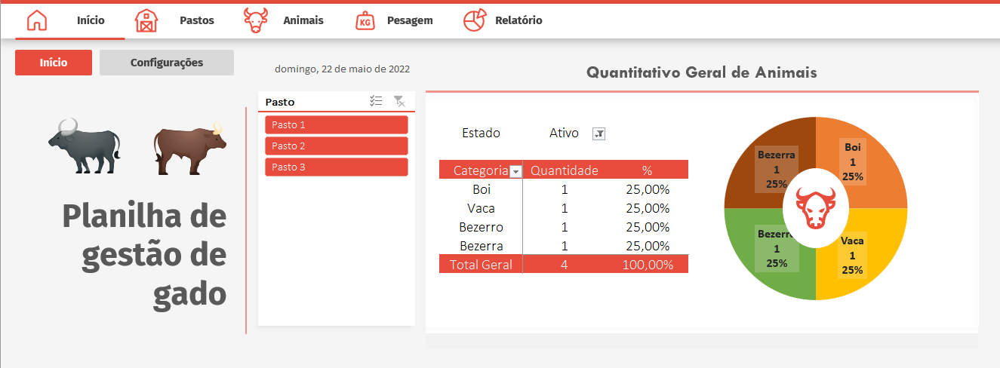
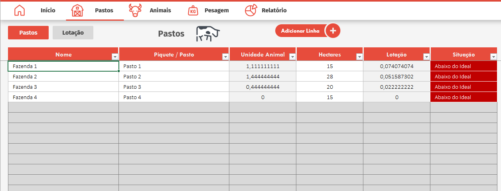
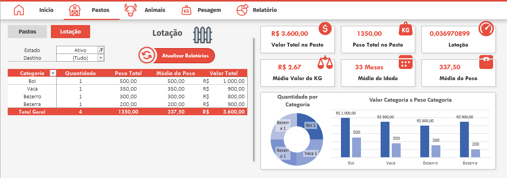
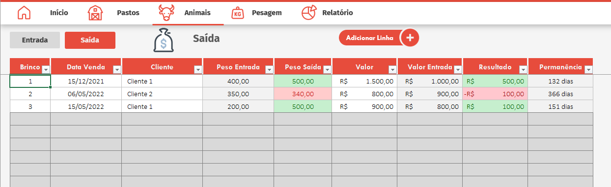
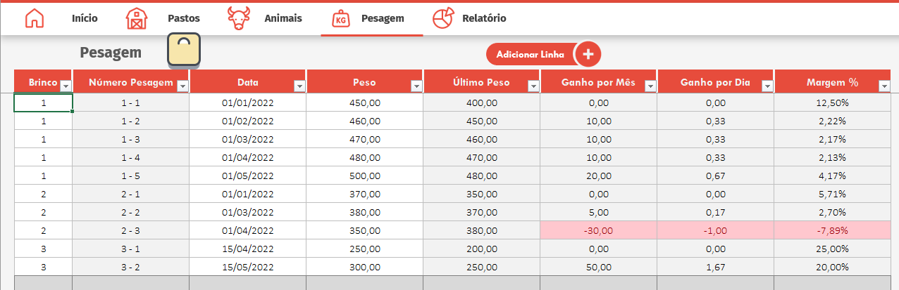
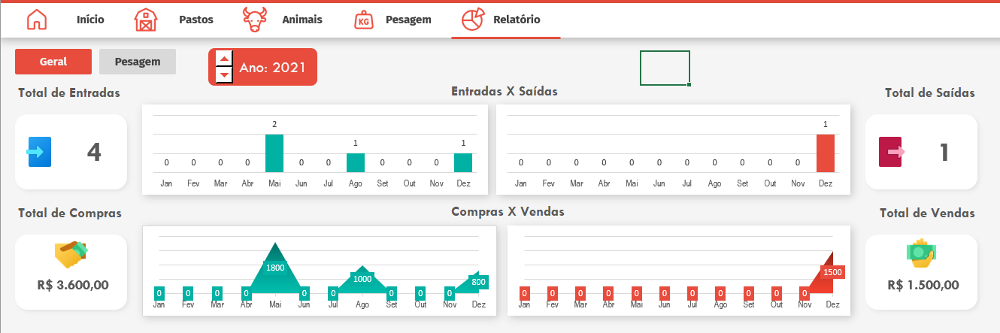
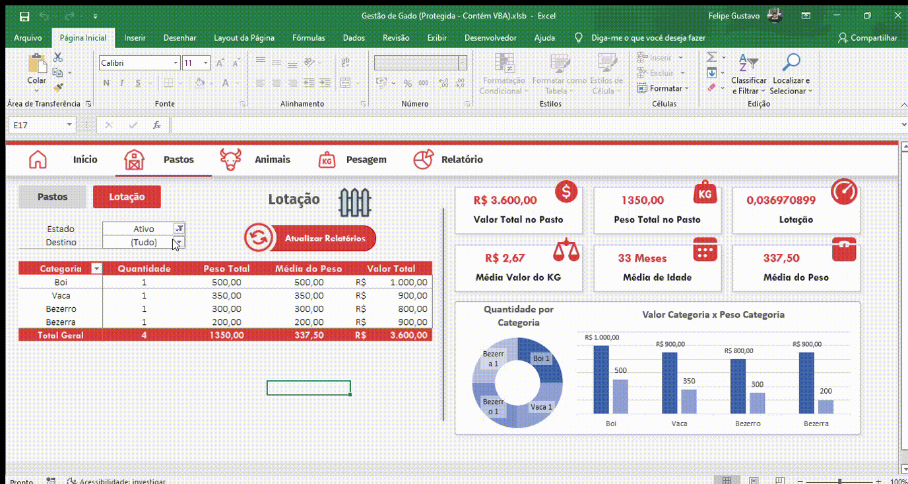

Tenha a informação e controle de cada animal do seu rebanho.
Administre as operações do seu gado e suas fazendas com facilidade.
Quero saber como!Palavras Chave: Gestão, Pecuária, Gado, Produtividade, Controle
"A falta de controle e gestão é um dos maiores problemas do pecuarísta brasileiro."
O que você não mede, você não controla. Para garantir o bom funcionamento do seu negócio, é fundamental acompanhar de perto os números da fazenda. Taxa de mortalidade, peso máximo permitido por pasto, ganho de peso dos animais, entre muitas outras informações, que garantem ao pecuarista a real situação da produção, e garantem tomadas de decisões mais assertivas no negócio.
O controle eficiente do rebanho se faz indispensável para uma fazenda que quer se manter competitiva. Acompanhar essas informações traz ainda os seguintes benefícios:
- Redução de custos
- Identificação individual dos animais
- Avaliar o desempenho do rebanho
- Aumento do número de vendas e oportunidades
- Padrão de controle de qualidade
Como posso obter essas informações?
Você provavelmente imaginou um sistema de informação bastante complexo e muito custoso. No entanto, você pode obter todos esses dados com nossa planilha específica para gestão de gado.
-

Planilha de Gestão de Gado
Tenha todos os registros dos animais em um só lugar, compra e venda, lotação de pastos, pesagem e acompanhamento de ganho, além de relatórios que trazem clareza na tomada de decisão.
-

Cadastro de Fazendas e Animais
Dentre as funções disponíveis, você pode registrar suas fazendas e seus respectivos pastos, com informações como lotação em unidades animal e hectares para posterior cálculo de peso máximo permitido por pasto. Além da entrada de animais e todas as informações pertinentes, como idade, peso, categoria, etc.
-

Acompanhe a movimentação do gado
Verifique a quantidade de animais por pasto e fazendas, acesse dados como peso máximo permitido no pasto, peso médio dos animais em determinado pasto, média de idade, etc.
-

Gerencie a saída de animais
Acompanhe a venda dos animais, através da seção de saída é possível comparar o peso de entrada e de saída, o resultado obtido e o tempo de permanência do animal nas suas fazendas.
-

Observe de Perto o ganho de peso
Na aba de pesagens é possível verificar o histórico do ganho do peso individual de cada animal, seja ganho por mês ou dia, além dos ganhos em porcentagem.
-

Relatórios
A planilha conta com 2 dashboards para que você pecuarista visualize de forma clara o andamento do negócio e a disposição das fazendas e pastos.
-

Características do produto
Fácil preenchimento
Relatórios com Dashboards prontas e interativas
Design profissional
Navegação intuitiva

De R$ 350,00
por apenas
R$ 100,00
Assim que seu pagamento for confirmado, sua planilha será enviada por e-mail.
Quero a oferta!DÚVIDAS FREQUENTES
Posso realizar alteraçõs (cores, formulas) após comprar a planilha?
Sim, você tem total liberdade para edição.
As planilhas são desbloqueadas para edição?
Sim, além das funcionalidades já disponíveis, você poderá editar, aumentando linhas e colunas e outras alterações conforme sua necessidade, basta realizar a desproteção da planilha, que foi pensada para manter a integridade da planilha segura.